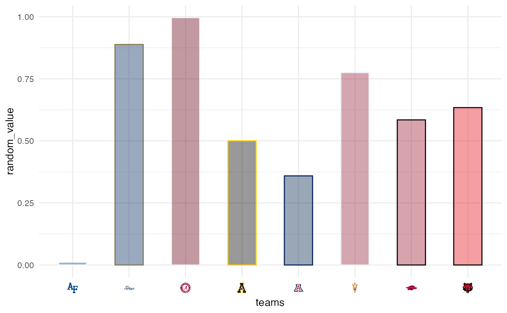

These functions map CFB team names to their team logos and make them available as axis labels
scale_x_cfb(
...,
expand = ggplot2::waiver(),
guide = ggplot2::waiver(),
position = "bottom",
size = 12
)
scale_y_cfb(
...,
expand = ggplot2::waiver(),
guide = ggplot2::waiver(),
position = "left",
size = 12
)
scale_x_cfb_headshots(
...,
expand = ggplot2::waiver(),
guide = ggplot2::waiver(),
position = "bottom",
size = 20
)
scale_y_cfb_headshots(
...,
expand = ggplot2::waiver(),
guide = ggplot2::waiver(),
position = "left",
size = 30
)Arguments
- ...
Arguments passed on to
discrete_scalepaletteA palette function that when called with a single integer argument (the number of levels in the scale) returns the values that they should take (e.g.,
scales::hue_pal()).breaksOne of:
limitsOne of:
NULLto use the default scale valuesA character vector that defines possible values of the scale and their order
A function that accepts the existing (automatic) values and returns new ones. Also accepts rlang lambda function notation.
dropShould unused factor levels be omitted from the scale? The default,
TRUE, uses the levels that appear in the data;FALSEuses all the levels in the factor.na.translateUnlike continuous scales, discrete scales can easily show missing values, and do so by default. If you want to remove missing values from a discrete scale, specify
na.translate = FALSE.na.valueIf
na.translate = TRUE, what aesthetic value should the missing values be displayed as? Does not apply to position scales whereNAis always placed at the far right.aestheticsThe names of the aesthetics that this scale works with.
scale_nameThe name of the scale that should be used for error messages associated with this scale.
nameThe name of the scale. Used as the axis or legend title. If
waiver(), the default, the name of the scale is taken from the first mapping used for that aesthetic. IfNULL, the legend title will be omitted.labelsOne of:
superThe super class to use for the constructed scale
- expand
For position scales, a vector of range expansion constants used to add some padding around the data to ensure that they are placed some distance away from the axes. Use the convenience function
expansion()to generate the values for theexpandargument. The defaults are to expand the scale by 5% on each side for continuous variables, and by 0.6 units on each side for discrete variables.- guide
A function used to create a guide or its name. See
guides()for more information.- position
For position scales, The position of the axis.
leftorrightfor y axes,toporbottomfor x axes.- size
The logo size in pixels. It is applied as height for an x-scale and as width for an y-scale.
Details
The scale translates the CFB team names into raw image
html and places the html as axis labels. Because of the way ggplots are
constructed, it is necessary to adjust the theme() after calling this
scale. This can be done by calling theme_x_cfb() or theme_y_cfb()
or alternatively by manually changing the relevant axis.text to
ggtext::element_markdown().
See also
Examples
library(cfbplotR)
library(ggplot2)
team_abbr <- cfbplotR::valid_team_names()
# remove conference logos from this example
team_abbr <- team_abbr[1:8]
df <- data.frame(
random_value = runif(length(team_abbr), 0, 1),
teams = team_abbr
)
if (utils::packageVersion("gridtext") > "0.1.4"){
# use logos for x-axis
ggplot(df, aes(x = teams, y = random_value)) +
geom_col(aes(color = teams, fill = teams), width = 0.5) +
scale_color_cfb(alt_colors = team_abbr) +
scale_fill_cfb(alpha = 0.4) +
scale_x_cfb() +
theme_minimal() +
# theme_*_cfb requires gridtext version > 0.1.4
theme_x_cfb()
}

#############################################################################
# Headshot Examples
#############################################################################
library(cfbplotR)
library(ggplot2)
dfh <- data.frame(
random_value = runif(9, 0, 1),
player_id = c("4361182",
"4426385",
"4567048",
"4372519",
"4429013",
"4240069",
"4360932",
"4362874",
"4429299")
)
if (utils::packageVersion("gridtext") > "0.1.4"){
# use headshots for x-axis
ggplot(dfh, aes(x = player_id, y = random_value)) +
geom_col(width = 0.5) +
scale_x_cfb_headshots() +
theme_minimal() +
# theme_*_cfb requires gridtext version > 0.1.4
theme_x_cfb()
# use headshots for y-axis
ggplot(dfh, aes(y = player_id, x = random_value)) +
geom_col(width = 0.5) +
scale_y_cfb_headshots() +
theme_minimal() +
# theme_*_cfb requires gridtext version > 0.1.4
theme_y_cfb()
}